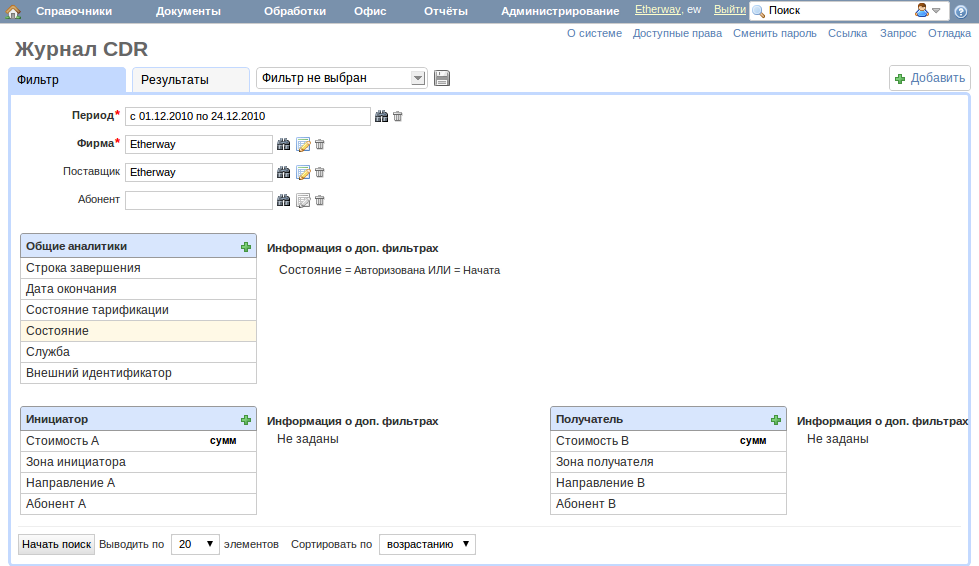
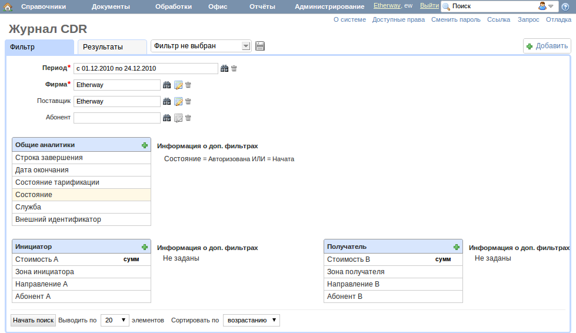
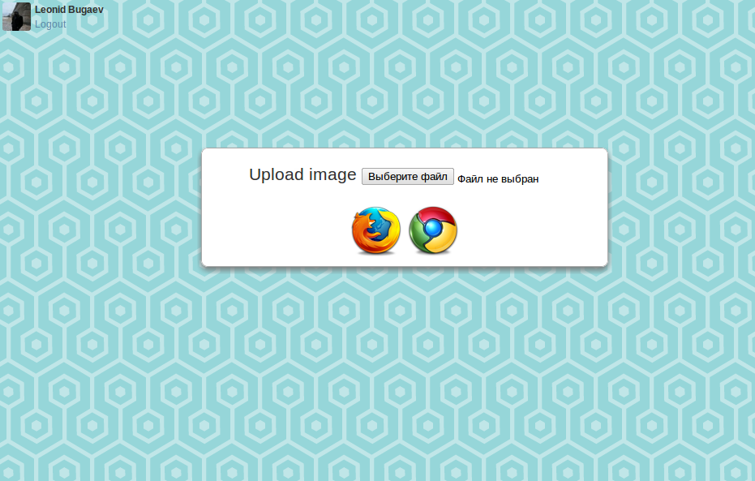
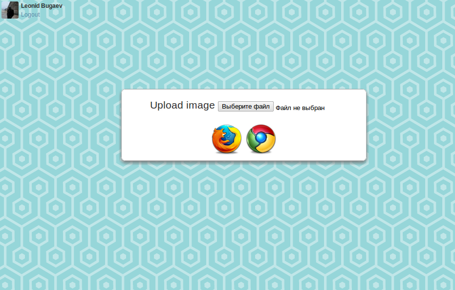

Я по праву считаю свою профессию самой творческой и получаю от неё огромное удовольствие.

Помните такую?:) В 6 классе эта машинка перевернула мое сознание. Ах, Basic...
2005-2007 Greenice, Seniour Rails Developer, Разработка Web-сайтов
Почти каждый web-разработчик начинал в такой небольшой фирме. В моем случае мы сами создали её с друзьями. Мной было разработано более 12 сайтов и получен огромный опыт в разработке и общении с клиентами.
2007-2010 Latera software (г.Москва, Зеленоград), Web Team Leader, Разработка Front-End крупной биллинговой системы
Целью было создать команду разработчиков и руководить созданием web-части большой, активно развивающейся системы. Этот проект сильно развил меня как разработчика и руководителя. Были поставлены интересные задачи, и вокруг них работал отличный дружный коллектив. Я очень рад что мне довелось работать с такой командой. После трех с половиной лет сотрудничества я решил пуститься в вольное плавание, и искать новые интересные проекты.
Ноябрь 2010 - Сейчас, Независимый разработчик
Занимаюсь развитием собственных проектов и ищу новых интересных людей.

 



 
